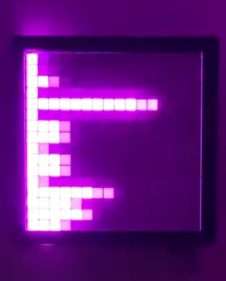
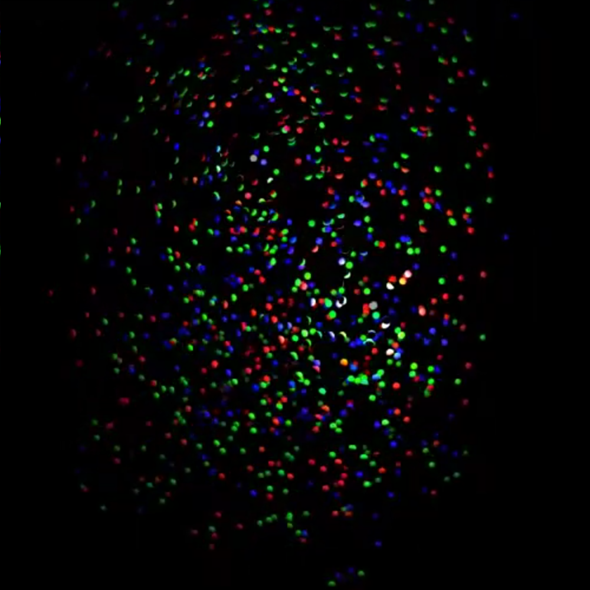
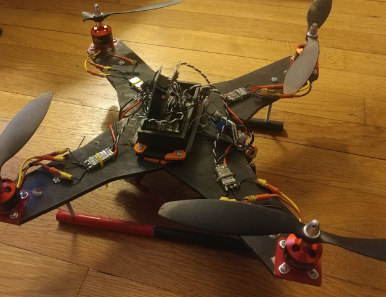

Benjamin Schreyer's website
"complete disorder is impossible," T. Motzkin

"complete disorder is impossible," T. Motzkin



Picture: arriving after crossing Gotthard pass over the Alps by bike.

Pictures: TeenTreks New York to Montreal bike touring!